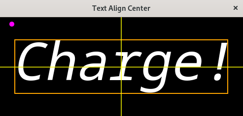

(update:2025/4/29)
グラフィック画面の中央に文字列を表示します。ここでは、ink_extentsを用いて、文字列の「中心位置」が指定の座標に描かれるように描画します。
文字列の表示方法は次の通りです。
set_family()関数を実行してフォントの種類を指定します。
【関 数】
| void | Pango::FontDescription::set_family( | const Glib::ustring & | family | ) |
|---|
【返 値】 : 無し
set_weight()関数を実行してフォントを太字にするかどうかをを指定します。
【関 数】
| void | Pango::FontDescription::set_weight( | Weight | weight | ) |
|---|
【返 値】 : 無し
set_style()関数を実行してフォントの斜体にするかどうかをを指定します。
【関 数】
| void | Pango::FontDescription::set_style( | Style | style | ) |
|---|
【返 値】 : 無し
set_size()関数を実行して文字列のサイズを指定します。
10ポイントの文字を表示する場合は、10 * Pango::SCALE と入力します。
【関 数】
| void | Pango::FontDescription::set_size( | int | size | ) |
|---|
【返 値】 : 無し
create_pango_layout()関数を実行して文字列の領域を確保します。"文字列"として表示したい文字列を直接指定することも可能です。
レイアウトを格納する領域を確保します。表示する文字列を空白("")にしておいて、set_text()関数で後から表示する文字列(text)をセットすることができます。
【関 数】
| Glib::RefPtr<Pango::Layout> | Gtk::Widget::create_pango_layout( | const Glib::ustring & | text ) |
|---|
【返 値】 : Glib::RefPtr<Pango::Layout>
set_text()関数を実行して画面に表示する文字列をセットします。
【関 数】
| void | Pango::Layout::set_text( | const Glib::ustring & | text | ) |
|---|
【返 値】 : 無し
レイアウトにフォントの種類やサイズ、強調などのフォントの書式を反映します。/p>
【関 数】
| void | Pango:Layout::set_font_description( | const FontDescription & | desc ) |
|---|
【返 値】 : 無し
ここでは、ink_extentsの範囲を取得します。
【関 数】
| Pango::Rectangle | Pango::Layout::get_pixel_ink_extents() |
|---|
【返 値】 : Pango::Rectangle
Windowの中央を表示位置としてセットします。
move_to(x,y)関数を使って、文字列を表示する位置の座標を指定します。
表示する文字列の色を指定します。
文字列のレイアウトをサーフェースに映します。
【関 数】
| void | Pango:Layout::show_in_cairo_context( | const Cairo::RefPtr<Cairo::Context> & | context ) |
|---|
【返 値】 : 無し
#include <gtkmm.h>
#include <iostream>
class Drawing : public Gtk::DrawingArea {
public:
Drawing();
virtual ~Drawing() = default;
protected:
void on_draw(const Cairo::RefPtr<Cairo::Context>& cr, int width, int height);
};
Drawing::Drawing()
{
set_draw_func( sigc::mem_fun( *this, &Drawing::on_draw));
}
void Drawing::on_draw(const Cairo::RefPtr<Cairo::Context>& cr, int width, int height) {
Pango::FontDescription font;
// 背景色
Gdk::Cairo::set_source_rgba( cr, Gdk::RGBA( "black" ));
cr->paint();
// 1.フォントの種類
font.set_family( "MonoSpace" );
// 2.フォントの太字
font.set_weight( Pango::Weight::NORMAL );
// 3.フォントの傾斜
font.set_style( Pango::Style::ITALIC );
// 4.フォントのサイズを指定
font.set_size( 80 * Pango::SCALE );
// 5.フォントの領域の確保
Glib::RefPtr<Pango::Layout> layout = create_pango_layout( "" );
// 6.文字列のセット
layout->set_text( "Charge!" );
// 7.書式のセット
layout->set_font_description( font );
// 8.extentsの取得
Pango::Rectangle a = layout->get_pixel_ink_extents();
// 9.文字列を表示したい座標をセット
int x0 = width / 2.0;
int y0 = height / 2.0;
// 10.文字列を実際に表示する座標の計算
int tx = x0 - ( a.get_width() / 2.0 + a.get_x());
int ty = y0 - ( a.get_height() / 2.0 + a.get_y());
Gdk::Cairo::set_source_rgba( cr, Gdk::RGBA( "Orange" ));
cr->rectangle( tx + a.get_x(), ty + a.get_y(), a.get_width(), a.get_height() );
cr->stroke();
std::cout << "tx : " << tx << std::endl;
std::cout << "ty : " << ty << std::endl;
std::cout << "ink_x : " << a.get_x() << std::endl;
std::cout << "ink_y : " << a.get_y() << std::endl;
std::cout << "ink_width : " << a.get_width() << std::endl;
std::cout << "ink_height : " << a.get_height() << std::endl;
std::cout << "lbearing : " << a.get_lbearing() << std::endl;
std::cout << "rbearing : " << a.get_rbearing() << std::endl;
std::cout << "ascent : " << a.get_ascent() << std::endl;
std::cout << "descent : " << a.get_descent() << std::endl;
// 11.文字列を表示する位置に移動
cr->move_to( tx, ty );
// 12.文字列を表示する色の指定
Gdk::Cairo::set_source_rgba( cr, Gdk::RGBA( "white" ));
// 13.文字列の表示
layout->show_in_cairo_context( cr );
// 座標軸
cr->move_to( 0.0, height/2.0 );
cr->rel_line_to( width, 0.0 );
cr->move_to( width/2.0, 0.0 );
cr->rel_line_to( 0.0, height );
cr->set_line_width( 1.5 );
Gdk::Cairo::set_source_rgba( cr, Gdk::RGBA( "Yellow" ));
cr->stroke();
// 基準点
Gdk::Cairo::set_source_rgba( cr, Gdk::RGBA( "Fuchsia" ));
cr->arc( tx, ty, 5.0, 0.0, 2*M_PI );
cr->fill();
}
class MyWindow : public Gtk::Window
{
public:
MyWindow();
protected:
Drawing my_draw;
};
MyWindow::MyWindow()
{
set_title( "Text Align Center" );
set_default_size( 500, 240 );
set_child( my_draw );
}
int main(int argc, char* argv[]) {
auto app = Gtk::Application::create( "gtkmm4.example" );
return app->make_window_and_run<MyWindow>( argc, argv );
}
| Text Align Center | |
|---|---|
| Console | Window |
|
$ tx : 28 ty : 14 ink_x : 6 ink_y : 32 ink_width : 432 ink_height : 109 lbearing : 6 rbearing : 438 ascent : -32 descent : 141 |
 |